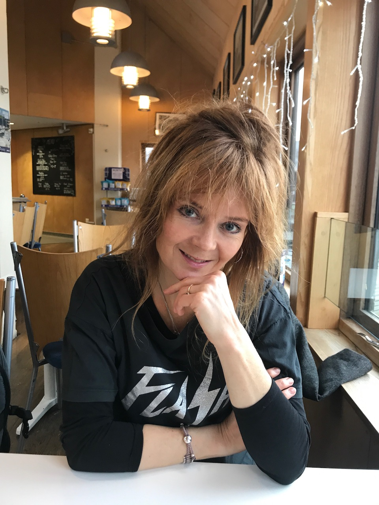

Becky McCall

Becky McCall (Becky McCall Limited)
25, Green Lane, Chesham Bois, Amersham, Bucks. HP6 5LN
ContactBeckyoktar@hotmail.com
Journalist and writer in the fields of medicine and public health
Brings a wealth of journalistic – writing, reporting and audio-visual production experience within medicine and public health
Experience and skills
articles published in the Lancet
Written material: I have published extensively (100s) of written articles (news and features), reports (5,000 – 25,000 words), radio podcasts (BBC), and videos on a wide selection of topics relevant to medicine and public health. A comprehensive selection are available upon request, but please find a small selection here:
Weight Watchers Successful Part of Diabetes Prevention Program in UK. Medscape.com/news. HYPERLINK "https://www.medscape.com/viewarticle/887115" https://www.medscape.com/viewarticle/887115
Obesity Soars 10-Fold in Kids; With Underweight It's a 'Double Burden' Medscape.com/news. https://www.medscape.com/viewarticle/886888
Reducing Environmental Pollutants Tied to Drop in Diabetes. Medscape.com/news. Medscape.com/news. November 1, 2016. ( HYPERLINK "https://www.medscape.com/viewarticle/871204" https://www.medscape.com/viewarticle/871204)
Reports: author on approx. 25 reports on diverse health-related topics e.g. MRC work in Africa; British Neuroscience Society annual report; FirstWord reports on issues relating to the pharmaceutical industry e.g. digital technology in healthcare, patient centricity
(http://www.fwreports.com/)
Film: multiple short interviews with researchers and clinicians discussing research work as presented at conference, aimed at a clinical audience (mainly for https://www.doctors.net.uk/). Video files can be sent upon request.
Specialist newspapers: writing, editing and producing congress newspapers during international medical congresses e.g. HYPERLINK "https://www.myesr.org/publications/ecr-today-daily-congress-newspaper" https://www.myesr.org/publications/ecr-today-daily-congress-newspaper;
Leipzig Interventional Course ( vascular surgery) LINC Daily News and LINC Review .
Key medical specialties: cardiology, diabetes, endocrinology, oncology, haematology, and radiology. Public health focussed topics are mainly around obesity, diabetes, public health interventions e.g. sugar tax, or trends in social determinants of health, and writing pieces based on population health studies and conference presentations.
MSc PH at LSHTM
Modules: epidemiology, statistics for PH; health economics; research, design and analysis; medical anthropology; foundations of health promotion, issues in PH, approaches and methods in health promotion, integrated module on practice and policy of PH. The integrated module, in particular, provided opportunity to explore mental health as a pressing public health issue across London (Assignment required writing a policy briefing on addressing how the London Mayor could tackle mental health across the capital incorporating mental health across the life course and mental health inequalities. (Mark: distinction).
MSc dissertation: From the patient perspective, which values and preferences influence choice of therapy in adults with Graves’disease? Focused on an ongoing issue around how to determine the optimal treatment course for patients with hyperactive thyroid, focusing on the patient’s perspective on different treatment options. Literature review and critical appraisal.
MSc Results: Overall grade pending. Assignments: Distinction. Examinations: Pass. Dissertation: Distinction.
Journalistic skills transferable to some PH roles
-Researching, writing and editing news and feature stories from medical journals and medical conferences, working in editorial teams and film production teams. All activities related to news are carried out under tight deadlines (e.g. two high quality publishable articles per day at a medical conference).
-Organisation and production of a news reporting program (both film and website content) from large medical meetings e.g. European Society of Cardiology, European Association for the Study of Diabetes (EASD)
working within a team of 4 or 5 producers/camera operators/editors.
-Supervision and management of contributing writers in an editorial role: producing magazines, newsletters, planning content and timelines, commissioning and discussing work with other editors and stakeholders, managing corrections and changes.
-Interviewing researchers and clinicians on their work, or the issues under discussion, ensuring clarity and concise responses without sacrificing meaning. Seeking external comments to provide balance and credibility.
Education:
| 2015-2017 | MSc. Public Health. London School of Hygiene and Tropical Medicine (LSHTM). |
| 2002-2003 | MSc. Science Communication, Imperial College, London |
| 2001-2002 | Advanced Diploma in Integrated Marketing Communications (Pass/Distinction)Communication, Advertising and Marketing Foundation |
| 1995 | Association of the British Pharmaceutical Industry Examination (Distinction) |
| 1990-1994 | BSc. (Hons.) Applied Biology (2.1) University of Wales College of Cardiff. Specialist interest microbiology/molecular biology |
Continuing education:
| 2011 | Imperial College, summer school on global health |
| 2012 | University College London, Department of Social Epidemiology, summer school on the Social Determinants of Health. |
| 2017 | London School of Hygiene and Tropical Medicne MSc PH |
| 2018 | PhD candidate UCL: Storytelling to communicate the concept of antimicrobial resistance to the general public |
References and samples available on request.
An extended work history including employed work for pharmaceutical companies, teaching, and more information on publications, TV and radio productions is also available.
Other print and online news, features and content:
- Book author:The Healing Power of Nature.
- Readers Digest.
- Medscape.com: regular contributor reporting from international medical conferences and journal papers. All therapy areas, but particularly diabetes/endocrinology, and oncology.
- Toshiba Medical Systems Europe: writing and producing marketing materials
- The Lancet: feature writer for World Report and Research Focus which looks at clinical and research issues in a political and cultural context.
- FirstWord (Doctor’s Guide Publishing) intelligence reports of around 20,000 words on hot topics of relevance to the pharmaceutical and biotech industry. Topics have included engaging KOLs; sales and marketing strategies for orphan drugs, and payer engagement, use of mobile healthcare and patient empowerment.
- Medifore communications: Written and edited medical congress newspapers. Interventional cardiology and vascular surgery and neurology. Presented to camera, interviewed surgeons and clinicians.
- Auntminnie.com: regular contributor to leading radiology website, interviewing key consultants and leaders in the field, reporting form conferences.
- Doctors.net.uk: news reporting from European and US medical conferences
- Medical Imaging International: reports and news articles from trade conferences
- British Neuroscience Association (BNA): a report in the state of British neuroscience in 2013 and a potential BNA strategy moving forward
- CASMI: recent report on use of innovation in GP practice across the UK
- European Brain Council: Editor for the magazine of the European umbrella organisation which oversees all the charities related to brain diseases in Europe (Alzheimer’s, Parkinson’s, MS, depression, brain injury etc.)
- Readers’s Digest: Contributing chapters to a book entitled ‘The Amazing Healing Powers of Nature’.
- Cosmos Reload: Writing features for a new I-pad based science magazine for young people covering everything from the brain of the teenager to how the elite athlete’s body and growing new body parts.
- Elsevier International Medical News Group- news reporting from conferences
- Auntminnie.com and Auntminnieeurope.com: radiology news reporting covering conferences and features as required
- Medical Imaging International: conference reporting
- Cosmos science magazine: HYPERLINK "http://www.cosmosmagazine.com" cosmosmagazine.com, contributor on news and features
- Dictate.it: writing and managing website content via a content management system
- Medscape.com: regular contributor reporting from international medical conferences
- Schistosomiasis Control Initiative (SCI), an NGO based at Imperial College, London and across sub-Saharan Africa: worked with the SCI team in London selecting news, writing and editing news stories and currently completing a book on the 10-year history of the SCI.
- GP Newspaper: news reporting
- Healthcarerepublic.com: news reporting
- Independent Nurse magazine: news reporting
- The Economist Intelligence Unit: feature articles on global healthcare systems and management
- OnScreen Productions: produced materials, which overviewed clinical data on diabetes product for Takeda for use by European brand managers in marketing campaign.
The : features and news.
- International Alliance of Patient Organisations (IAPO): compiling and writing toolkit on patient safety issues for an international audience covering topics such as hospital acquired infection, medical error, and clinical trial participation.
- The Pharma Times: news and features writing
- Livewire Editorial Communications: Medical education producing marketing brochures, newsletters, bulletins, conference reports for pharmaceutical companies.
- The Wellcome Trust: specialist and non-specialist materials for the International Health department, feature writer for Wellcome Science Magazine. Booklet for secondary school children on evolution.
- The Times Higher Education Supplement: weekly news and feature reporting on research/higher education issues with particular interest in medicine and science. Researched and written special supplements.
- OMP: clinical highlights for company-sponsored sites from meetings such as LUPUS 2008, American Society of Clinical Oncology, ACR and American Nephrology Society
- Medical Research Council: report on global health, ‘Improving Health, Improving Lives’, report on public discussion forum on autism research.
- The Department of Health, UK Government (2006): writer for the Chief Medical Officer’s annual report and reviews of the various directorates within the Department of Health.
- GCI: reports from the European Cancer Conference in Paris, 2005
- ESRC symposia: report from the ESRC Genomics Forum
- Medicus Medical Communications: medical writer/copy writer involved in projects on Celebrex (cox-2), Enbrel (anti-TNF for rheumatology and dermatology), Accomplia (obesity/smoking cessation), Taxotere (breast, lung, prostate cancer), Hermal (psoriasis) and ViraferonPeg (Hepatitis C)
- BBC News Online, Medwire news website: various freelance written and broadcast commissions of a science and medical nature.
- Centre of the Cell, Queen Mary University of London: writer for new exhibition and website content on the ethics of biomedical science.
- HYPERLINK "http://www.prostatebrachytherapyinfo.com" www.prostatebrachytherapyinfo.com: contributing writer
- Committee for Climate Change: Researched and produced web content and podcasts for website to accompany launch of Government report on how the UK will tackle climate change in next 50 years or so, http://www.theccc.org.uk/
- OMP: production of webcasts and news reporting from various international medical conferences, notably, American College of Rheumatology (ACR), American Society of Nephrology (ASN), European Breast Cancer Conference (EBCC), and Lupus 2008.
- Map of Medicine: writing patient versions of treatment algorithms for various diseases as part of an ongoing project aimed at producing electronic disease information and treatment pathways for clinicians and patients. This is a project for the NHS.
- Transart Medical Communications: contributed to a website aimed at helping people with depression and a training manual on kidneys and renal disease.
- Healthcare 21: patient information content for prostate brachytherapy website.
- TV: Channel 4 and Flashback TV co-presented series with Tony Robinson, investigating unusual and mysterious stories from history. Broadcast over Christmas 2008
- BBC TV health news producer for the 1, 6 and 10 o’clock news: this freelance contract involved researching, interviewing, filming and delivering short 1-3 minute health news items together with the health correspondents.
- BBC Specialist Factual: specialist researcher for a drama-documentary called ‘If... we could play God’ that predicted where stem cell research would be in 10 years time.
- Research: Science communication project funded by a Wellcome Trust International Development grant and Imperial College-based Schistosomiasis Control Initiative. Managed a health education campaign in Uganda, which uses the medium of drama to disseminate health messages in schools and community
- Media training: I have taught various media-related skills to scientists in Eastern Europe as part of Famelab, a Europe –wide competition for scientists who present their work in an entertaining way. Skills I teach include how to be a good interviewee, how to present in public, the importance of science communication, and working in radio and TV. I draw on my own varied experiences in these fields.
- Radio: I have produced and reported packages for BBC World Service, Radio Netherlands, and BBC Radio Bristol. I have also researched for the BBC Natural History Unit, and the BBC Science Radio Unit
- Business: Immunology Product Specialist for Wyeth and their biologic for Rheumatoid Arthritis (RA) called Enbrel, an anti-TNF therapy for patients with arthritic disease (2000-2003): marketed a new anti-TNF therapy to treat RA. I was one of a national team of 6 managing the entry of a new high cost treatment for RA and psoriatic arthritis into secondary care. The focus was on contact with our key opinion leaders (KOLs), NHS healthcare professionals and managers, KOL advisory groups through meetings and regular communication of progress towards use of Enbrel into clinical practice.
- Senior representative, Searle Pharmaceuticals (1998-2000): Organised and presented at launch events and exhibitions in the therapeutic areas of female health, arthritis and pain. Key responsibilities included developing working relationships with decision makers. (edited)